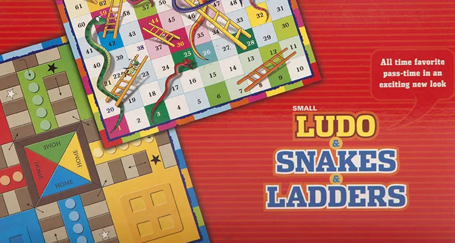

TrueDice
A VR app for Dice that takes accelerometer data and simulates shaking action


A VR app for Dice that takes accelerometer data and simulates shaking action
I played this classic Indian board game Ludo with my nephew and niece and complained about losing the die too often. This inspired me to create a virtual dice that the user can physically manipulate and it won't be based on some pseudorandom number generation but as close to true randomness that one can achieve. As research, I looked up some apps on Google Play Store and found none of them do what I wanted. Some implementations just applied an impulse force to the die/dice in the scene and they jumped and gave a number. Some others employed animation and pseudorandom number generation to show the particular face.
These apps were not good enough and as I pondered more about the idea, I thought, why hasn't anyone done this yet? An Android phone has an accelerometer sensor with fusion algorithms that combines data from multiple sources to filter out the data. We can figure out the forces being applied to the mobile and use relativistic frames of reference to manipulate the die. We also have physics and collision detection, which can contain the die within an enclosed space. It's just a matter of putting everything together.